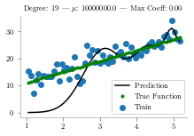

import matplotlib.pyplot as pltimport numpy as npimport pandas as pdimport matplotlib
/tmp/ipykernel_2413694/3589217045.py:3: DeprecationWarning:
Pyarrow will become a required dependency of pandas in the next major release of pandas (pandas 3.0),
(to allow more performant data types, such as the Arrow string type, and better interoperability with other libraries)
but was not found to be installed on your system.
If this would cause problems for you,
please provide us feedback at https://github.com/pandas-dev/pandas/issues/54466
import pandas as pd
from latexify import latexify, format_axes
latexify()
#Define input array with angles from 60deg to 300deg converted to radiansx = np.array([i*np.pi/180for i inrange(60,300,4)])np.random.seed(10) #Setting seed for reproducabilityy =4*x +7+ np.random.normal(0,3,len(x))y_true =4*x +7max_deg =20data_x = [x**(i+1) for i inrange(max_deg)] + [y]data_c = ['x'] + ['x_{}'.format(i+1) for i inrange(1,max_deg)] + ['y']data = pd.DataFrame(np.column_stack(data_x),columns=data_c)data["ones"] =1plt.plot(data['x'],data['y'],'.', label='Data Points')plt.plot(data['x'], y_true,'g', label='True Function')plt.xlabel("x")plt.ylabel("y")plt.legend()format_axes(plt.gca())plt.savefig('lin_1.pdf', transparent=True, bbox_inches="tight")
---------------------------------------------------------------------------NameError Traceback (most recent call last)
Cell In[2], line 16 14 plt.ylabel("y")
15 plt.legend()
---> 16format_axes(plt.gca())
17 plt.savefig('lin_1.pdf', transparent=True, bbox_inches="tight")
NameError: name 'format_axes' is not defined
/Users/nipun/anaconda3/lib/python3.7/site-packages/sklearn/linear_model/ridge.py:147: LinAlgWarning: Ill-conditioned matrix (rcond=1.62699e-21): result may not be accurate.
overwrite_a=True).T

<Figure size 244.08x150.85 with 0 Axes>
# from sklearn.linear_model import Ridge# for i,deg in enumerate([2,4,8,16]):# predictors = ['x']# if deg >= 2:# predictors.extend(['x_%d'%i for i in range(2,deg+1)]) # fig, ax = plt.subplots(nrows=1, ncols=4, sharey=True, figsize=(20, 4))# for i,alpha in enumerate([1e-15,1e-4,1,20]):# regressor = Ridge(alpha=alpha,normalize=True)# regressor.fit(data[predictors],data['y'])# y_pred = regressor.predict(data[predictors])# ax[i].scatter(data['x'],data['y'], label='Train')# ax[i].plot(data['x'], y_pred,'k', label='Prediction')# ax[i].plot(data['x'], y_true,'g.', label='True Function')# ax[i].legend() # ax[i].set_title(f"Degree: {deg} | Alpha: {alpha} | Max Coeff: {max(regressor.coef_, key=abs):.2f}")
plt.style.use('seaborn-whitegrid')x = [1,2,3,4]y = [1,2,3,0]y_1 = [(2-i/5) for i in x]y_2 = [(0.5+0.4*i) for i in x]plt.ylim(-0.2,3.3)plt.plot(x,y,'.')for i inrange(len(x)): plt.text(x[i]-0.1, y[i]+0.1, "({},{})".format(x[i], y[i]))#plt.plot(x,y_1, label="unreg")#plt.plot(x,y_2, label="reg")#plt.legend()#format_axes(plt.gca())plt.savefig('temp.pdf', transparent=True)
/Users/nipun/anaconda3/lib/python3.7/site-packages/sklearn/linear_model/ridge.py:147: LinAlgWarning: Ill-conditioned matrix (rcond=1.11479e-28): result may not be accurate.
overwrite_a=True).T